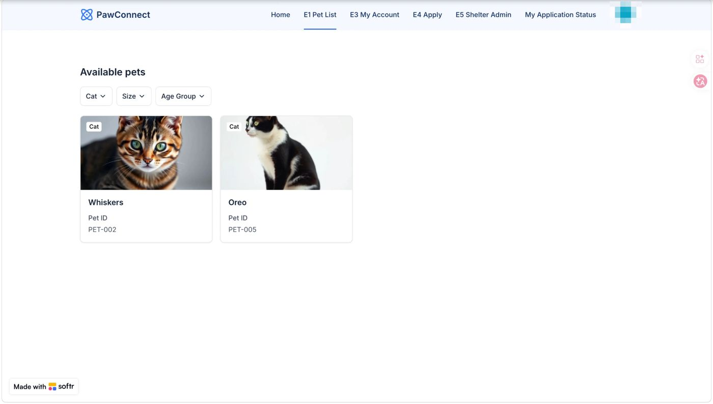
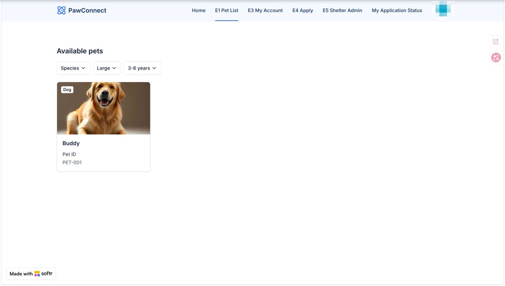
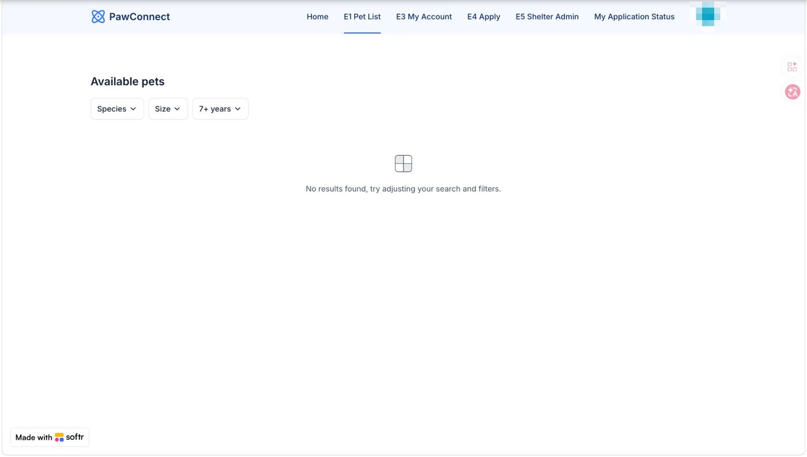
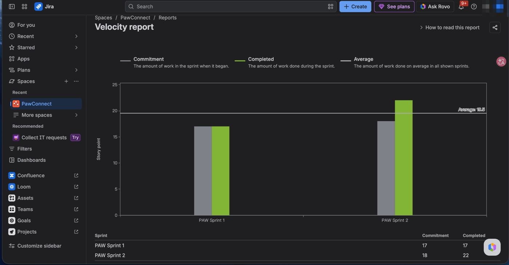
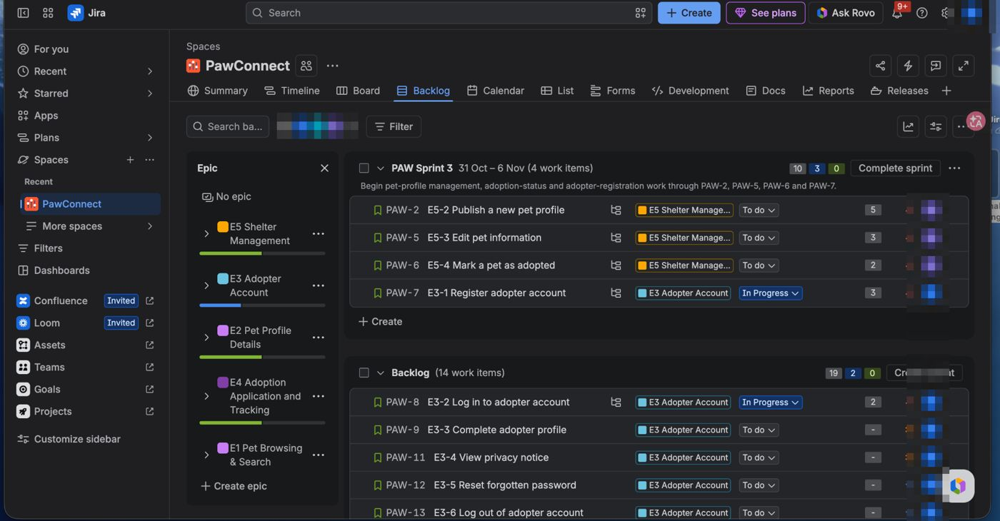

PawConnect：用 Scrum 做出宠物领养平台原型PawConnect: a Pet-Adoption Prototype Built with Scrum
悉尼大学 PMGT5871 项目计划 · 5 人 Scrum 团队 · 本人为开发成员，负责 Epic E1 宠物浏览与搜索University of Sydney, PMGT5871 Project Planning · five-person Scrum team · I was a developer and owned Epic E1, pet browsing and search
简介Summary
五人团队用 Scrum 开发宠物领养平台原型。报告截至 2026 年 11 月 3 日记录了两个已完成 Sprint 和一个进行中的 Sprint：Jira 管理 5 个 Epic、30 个用户故事，Softr 低代码搭建页面。我负责领养人找宠物的第一步，也就是宠物列表、按物种、年龄和体型筛选，以及无结果提示；前期还做了 Softr 的可行性测试，为团队的工具选型提供依据。
A five-person team used Scrum to build a pet-adoption prototype. At the report cutoff on 3 November 2026, two sprints were complete and a third was ongoing: 5 Epics and 30 user stories in Jira, pages built in Softr. I owned the adopter's first step: the pet list, filters by species, age and size, and the no-results message. Early on I ran the Softr feasibility tests that informed the team's tool choice.
- 用到的技能：Scrum 全流程、Jira（Backlog、看板、燃尽图、速度报告）、用户故事与 Given/When/Then 验收标准、Softr 低代码原型
- 展现的能力：把需求拆成可交付、可测试的小任务；按验收标准测试和复测；在工具限制下及时暴露风险
- Skills: end-to-end Scrum, Jira (backlog, board, burndown, velocity), user stories with Given/When/Then acceptance criteria, Softr no-code prototyping
- Shows: breaking requirements into small testable deliverables, testing and retesting against acceptance criteria, surfacing tool risks early
1. 背景1. Context
现有的宠物领养流程分散在不同网站、邮件和纸质表格里，领养人找宠物难，收容所处理申请也麻烦。作业要求团队用 Scrum 做出一个能跑通的原型。团队五人各负责一个 Epic：E1 浏览与搜索（我）、E2 宠物详情、E3 领养人账户、E4 申请与跟踪、E5 收容所管理。
Pet adoption is often spread across websites, emails and paper forms, making it hard for adopters to find pets and for shelters to process applications. The brief was to deliver a working prototype using Scrum. Each of five members owned an Epic: E1 browsing and search (me), E2 pet details, E3 adopter accounts, E4 applications, E5 shelter management.
2. 我做了什么2. What I did
- 写用户故事。10 月 16 日起草了 E1 的 6 个用户故事，每个都带 Given/When/Then 验收标准。例如 PAW-36「浏览可领养宠物」：AC1 列表显示所有状态为「可领养」的宠物；AC2 已被领养的不出现；AC3 点击卡片进入同一 ID 的详情页。
- Softr 可行性测试。Discovery 会上团队决定用 Softr，我负责测完剩余的工具测试：登录、权限、申请流程、免费版套餐的限制。
- Sprint 1：交付 PAW-36 宠物列表（3 点）。接上宠物数据、只显示可领养的宠物、连到详情页。测试时把一只宠物改成「已领养」，确认它从列表消失。
- Sprint 2：中途追加两个筛选故事。10 月 28 日产品负责人批准把 PAW-38（按物种筛选）和 PAW-39（按年龄、体型筛选）加入 Sprint 2，我完成开发，并协助另一位成员的 PAW-8 登录功能。
- 测试别人的故事。我是 E2 和 E4 几个故事的测试人。10 月 21 日测「申请领养」时发现 Whiskers 选不上，原因是宠物 ID 里把字母 O 输成了数字 0；修复后第二天我复测通过。
- User stories. On 16 October I drafted six E1 stories with Given/When/Then criteria, e.g. PAW-36 "Browse available pets": AC1 list every Available pet; AC2 hide Adopted pets; AC3 a card opens the matching detail page.
- Softr feasibility. After Discovery chose Softr, I completed the remaining tests: logins, permissions, application flow and Free-plan limits.
- Sprint 1: PAW-36 pet list (3 points). Connected pet data, showed only Available pets, linked to details. I verified that a pet marked Adopted disappeared.
- Sprint 2: two filter stories added mid-sprint. On 28 October the Product Owner approved adding PAW-38 (species) and PAW-39 (age and size); I built both and supported a teammate's PAW-8 login story.
- Testing others' work. As tester for E2 and E4 stories, on 21 October I found Whiskers could not be selected in the application form: the pet ID had a zero instead of the letter O. After the fix I retested and passed it the next day.




3. 关键判断3. Key judgements
- 没测过就不算完成。10 月 22 日我把 PAW-36 从「进行中」直接拖到「完成」，跳过了测试。意识到不符合团队流程后，我把它拖回「测试中」，等测试人验证后第二天才标完成。
- 看板要实时更新。Sprint 1 很多卡片没及时更新，燃尽图一直停在 17 点，最后一天才掉到零，看不出真实进度。回顾会上我们约定状态一变就更新 Jira，每天站会过一遍看板，Sprint 2 的进度就清楚多了。
- 工具限制要写进记录，不能藏着。Softr 免费版没有用户组权限，隐藏导航链接挡不住直接输网址进管理页。这导致 PAW-8 的 AC3 不通过、退回 Backlog。团队把这个限制写进了决策记录，而不是假装做完了。
- Not tested means not done. On 22 October I moved PAW-36 straight from In Progress to Done, skipping testing. Realising it broke our workflow, I moved it back to Testing; it was marked Done the next day after the tester verified it.
- The board must be live. In Sprint 1 many cards lagged, so burndown sat at 17 points until the last day. At the retrospective we agreed to update Jira on every status change and review the board at each stand-up; Sprint 2 was far easier to track.
- Record tool limits openly. Softr Free has no user groups, so hiding a link cannot stop someone typing the admin URL. That failed PAW-8 AC3 and sent it back to the backlog. The team recorded the limitation in the decision log instead of claiming it was done.
4. 结果4. Results
- Sprint 1：承诺 6 个故事 17 点，全部通过产品负责人验收，没有遗留。
- Sprint 2：中途经批准从 18 点增加到 24 点，完成并验收 22 点；剩下的 2 点是因 Softr 权限限制未通过的 PAW-8。
- 我负责的 E1 交付了列表和两种筛选（PAW-36、38、39），共 9 个故事点；关键词搜索等 3 个故事按优先级留在 Backlog。
- Sprint 1: 6 stories, 17 points committed; all accepted by the Product Owner with no carry-over.
- Sprint 2: scope raised from 18 to 24 points with approval; 22 points accepted. The remaining 2 were PAW-8, failed by the Softr permission limit.
- My E1 delivered the list and two filters (PAW-36, 38, 39), 9 points in total; keyword search and two others stayed in the backlog by priority.


5. 不足与反思5. Limits and reflection
- 依赖发现得太晚。PAW-36 的最终测试要等 E2 详情页做好，拖到了 Sprint 后半段。下次在 Sprint 开始前就做依赖和就绪检查，集成测试提前做。
- 追加范围挤压了测试时间。Sprint 2 中途加了两个筛选故事，虽然经过批准，但留给测试和修正的时间变少了。
- 和上一个作业的对比。GA1 按章节分工，人员配置的问题到最后合稿才发现；GA2 用 Scrum，表单问题两天内就发现、修复、复测完。以后就算按章节分工，我也会在合稿前安排交叉审阅。
- Dependencies surfaced late. PAW-36's final test waited on the E2 detail page. Next time: dependency and readiness checks before the sprint, and earlier integration testing.
- Added scope squeezed testing. The two approved mid-sprint stories left less time for testing and fixes.
- Contrast with the previous assignment. In GA1, split by section, a staffing gap only appeared at final merge; in GA2 the form defect was found, fixed and retested within two days. Even when work is split by section, I now schedule a cross-review before merging.
6. 和实际工作的关系6. Why it matters in practice
在 Jira 上更新一张卡片，本质上是在告诉队友「这件事轮到你了」。这个项目让我把状态更新当成团队沟通的一部分，而不是补记录。在前两个 Sprint 中，我参与了需求拆解、计划、开发、测试和回顾，并在第三个 Sprint 的进行中快照里记录了未完成事项。
Updating a Jira card is really telling teammates "this is now yours". The project taught me to treat status updates as team communication, not paperwork. Across the first two sprints I participated in requirements, planning, implementation, testing and retrospectives, with remaining work recorded in the third sprint’s ongoing snapshot.